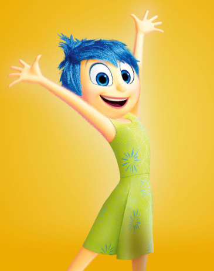

Comprender las emociones ayuda a mejorar el bienestar emocional.
La alegría es una emoción positiva que genera bienestar, motivación y energía. Ayuda a reducir el estrés y fortalece la salud mental.

La tristeza permite reflexionar, sanar y pedir apoyo. Es natural y necesaria, siempre que no se prolongue demasiado.
El miedo funciona como una alarma que protege del peligro. En exceso, puede generar ansiedad, pero es parte de la supervivencia humana.
El enojo indica que algo nos molesta o es injusto. Expresarlo de forma adecuada evita conflictos y mejora la comunicación.
La sorpresa aparece ante algo inesperado. Puede ser positiva o negativa y prepara al cuerpo para reaccionar rápidamente.
El asco protege de cosas peligrosas o dañinas. También ayuda a poner límites ante situaciones incómodas.